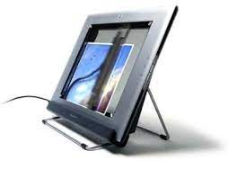
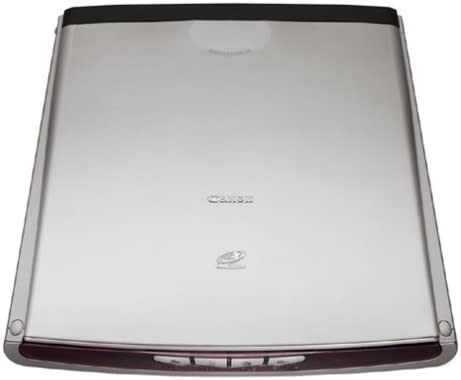

nato lak‰tai. Dirbant ‰iam ∞renginiui matyti, kaip tarp lak‰t˜ juda skaitymo galvutò. Galima manyti, kad tokio permatomo
skaitytuvo pirmtakai galòjo bti plok‰ãi˜-
j˜ skaitytuv˜ prototipai (kadangi ∞rengini˜
korpusas yra skaidrus, galima stebòti judanãias dalis ir atlikti ∞vairius matavimus).
Skaitytuvo korpuso de‰inòje ∞rengti keturi greito valdymo mygtukai: skaitymo,
spausdinimo (nuskaitytas vaizdas automati‰kai perkeliamas ∞ spausdintuvà), interneto (skaitant nustatoma internetinò vaizdo kokybò) ir energijos tausojimo (∞renginys veikia energijos tausojimo reÏimu). UÏ
interneto mygtuko ∞rengtas fotojuosteli˜
skaitymo priedo lizdas, o nuo kairòs korpuso dalies nutiestas maÏdaug 40 centimetr˜ USB/AC suderintuvo laidas.
„HP Scanjet 4670“ stovas — dviej˜ atram˜ laikomas ∞stiklintas ròmas, ∞ kur∞ ∞staãius skaitytuvà, dokumentà galima skaityti vertikaliai. Ørenginio apaãioje yra atidarytà skaitytuvà prilaikantis lovelis ir skaitomo objekto kreipianãiosios.
Dirbti naujuoju skaitytuvu per keletà
minuãi˜ i‰moks net pradedantysis kompiuteri˜ vartotojas (dauguma programinòs
∞rangos nuostat˜ — automatinòs). Numatyti trys skaitymo bdai: vertikalusis (skaitoma ∞ stovà ∞statytu skaitytuvu), horizontalusis (skaitoma ant stalo padòtu skaitytuvu objektà prispaudus i‰ vir‰aus), laisvasis (skaitoma skaitytuvà prispaudus prie
skaitomo objekto). Pastaruoju bdu galima nuskaityti ypaã didelius plok‰ãiuosius
pavir‰ius: plakatus, paveikslus.
Dalimis nuskaiãius tok∞ objektà, jo vaizdai sujungiami „ArcSoft Panorama Maker“
programa.
„Canon CanoScan LiDE 80“
„Canon CanoScan LiDE 80“ — pirmasis
ms˜ bandytas 2400 x 4800 ta‰k˜ colyje
optinòs skiriamosios gebos, CIS (Contact
Image Sensor) technologijos skaitytuvas.
·iuo ∞ portfel∞ telpanãiu (storis — vos 38 milimetrai) ∞taisu galima patogiai nuskaityti
dokumentus, nuotraukas, skaidres ir negatyvus (∞ komplektà ∞trauktas 35 milimetr˜ fotojuosteli˜ priedas). Prie kompiuterio „Canon CanoScan LiDE 80“ jungiamas
sparãiàja USB 2.0 sàsaja, be to, ‰ia sàsaja
jis ir maitinamas (keliaujant nereikia galvoti, kur prijungti maitinimo ‰altin∞).
„Canon CanoScan LiDE 80“ puikiai de


ròs prie kiekvieno stalinio kompiuterio:
perforuoto aliuminio dangtis, ‰ampano
spalvos plastikinis korpusas ir juodas priekinis skydelis, kuriame ∞rengti keturi (kopijavimo, skaitymo, rinkmenos atvertimo
ir el.pa‰to) greito valdymo mygtukai. Maitinimo ‰altinio mygtuko ‰iame ∞renginyje nòra. „Canon CanoScan LiDE 80“ nugaròlòje ∞rengti USB 2.0 sàsajos ir 35 milimetr˜ fotojuosteli˜ priedo lizdai, o apaãioje — skaitymo galvutòs fiksatorius.
„Canon CanoScan LiDE 80“ skaitytuvu
galima skaityti j∞ laikant horizontaliai arba vertikaliai (skaitant vertikaliai, ∞ kair´
priekin´ ∞renginio kojel´ ∞statoma nedidelò atrama). Tiesa, po pastatyto skaitytuvo
dangãiu padòjus storà Ïurnalà arba knygà,
jie nesilaiko ir slysta. Dar viena ‰io ∞renginio naujovò — speciali sàvara, dòl kurios
skaitant Ïurnalus ir knygas skaitytuvo dangt∞ galima pakelti maÏdaug 30 milimetr˜.
„Canon CanoScan LiDE 80“ fotojuosteli˜ skaitymo komplektà sudaro ∞ ∞renginio korpusà dedamas ‰e‰i˜ kadr˜ 35 milimetr˜ fotojuostelòs ròmelis ir „Fare Level
2“ technologijos skaitymo galvutò (automati‰kai pa‰alinami negatyvo ∞bròÏimai ir
dulkòs). Nuskaiãius vienà fotojuos
HP Scanjet 4670
Privalumai:
- l. gera skaitymo kokybė
- patogus skaitytuvo stovas
- galima nuskaityti didelius plok‰ãius
objektus
Trkumas
- ilgai skaitoma fotojuostelò
- nòra lietuvi‰kas raides atpaÏ∞stanãios
programinòs ∞rangos
kaina 825 litai
Bendrovė „Hewlett-Packard“
Canon CanoScan LiDE 80
Privalumai:
- l. gera skaitymo kokybė
- uÏima nedaug vietos
- fotojuosteli˜ nuskaitymo priedas
Trkumas
- nòra lietuvi‰kas raides atpaÏ∞stanãios
programinòs ∞rangos
kaina 619 litų
Bendrovė „BMS kompiuteriai“
telòs kadrà, galvut´ rankiniu bdu reikia perkelti ∞
kità ròmelio lizdà.
„Canon CanoScan LiDE 80“ programinòs ∞rangos diegimas trunka maÏdaug penkiolika minuãi˜. Gamintojà galima pagirti uÏ ypaã draugi‰kà TWAIN tvarkykli˜ vartotojo sàsajà, kuria turòt˜ bti patenkinti
ir mògòjai, ir profesionalai. Gerà ∞spd∞ paliko „CanoScan Toolbox“ pagalbinò programa, kuria patogu programuoti ∞renginio
greito valdymo mygtukus.
Bandym˜ rezultatai
Skaitant buvo naudotos spalvotos A4
formato bei 10 x 15 centimetr˜ nuotrau
 Nojus Valiukass
Nojus Valiukass